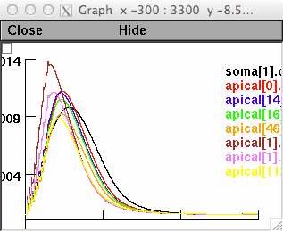
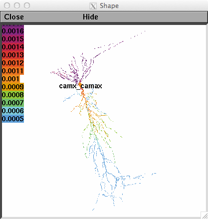
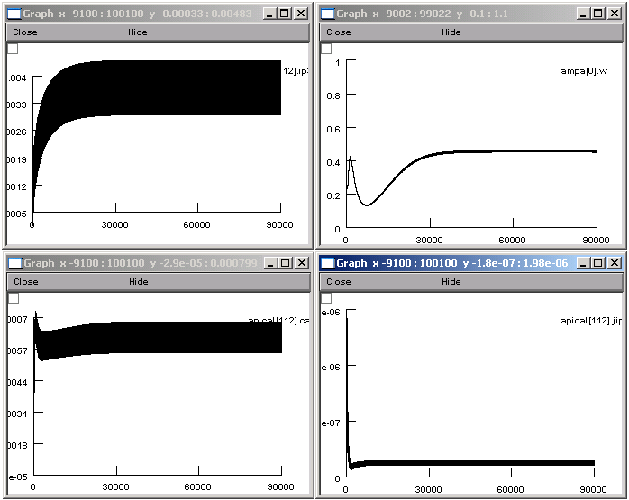

Quantitative interactions between the A-type K+ current and inositol trisphosphate receptors regulate intraneuronal Ca2+ waves and synaptic plasticity This is an implementation of the following paper: Ashhad S and Narayanan R. Quantitative interactions between the A-type K+ current and inositol trisphosphate receptors regulate intraneuronal Ca2+ waves and synaptic plasticity. J Physiology April 2013, Volume 591, Issue 7, pages 1645-1669, DOI: 10.1113/jphysiol.2012.245688 This is an implementation of intraneuronal calcium waves and metabotropic glutamate receptors (mGluR) in a morphologically reconstructed model of CA1 pyramidal neuron. The simulation environment is NEURON (freely available from http://www.neuron.yale.edu). The MOD files for this implementation were either taken/modified from previous studies or written for this study. Implemented by: Sufyan Ashhad (sufyan.ashhad@gmail.com, soofy@mbu.iisc.ernet.in) and Rishikesh Narayanan. Usage: If auto-launched from ModelDB select the corresponding checkbox to the below mentioned files. The below describes running in the mswin environment. Clicking on the Fig4F-G.hoc can run the simulation for the calcium waves. This will generate Figs 4F-G from the paper:   However, note that the color code for the figure 4F,in the paper, is not the same as in the figure that NEURON generates. This is because NEURON uses different sets of colors to specify different traces. Traces in the paper were re colored for better visibility and representation. Another difference is in the annotation of these traces. Default annotation in NEURON uses compartment name and location of the segment within that compartment to represent the variable being recorded. In the paper this annotation was simplified and compartments were categorized into soma, apical trunk (Trunk) and oblique dendrites (Oblique) and their respective distances from soma/branch points (in the case of obliques) was given. However the order of the traces (in terms of annotation, from top to bottom) is the same in the paper as well as in the figure generated by running this program. Clicking of Fig6C-F.hoc will run the simulation for the figures 6C-F in the paper. These correspond to the black traces in each panel and represent the condition when both NMDAR and mGluR are present as sources of calcium elevation in the postsynaptic compartment. To run this simulation, please make the 'Clamp Amplitude' to be 0 in the 'parameters' panel that comes up after running Fig6C-F.hoc file. This will make the current clamp amplitude to be 0. These graphs take hours to reproduce and should look like:  20140709 longip3dif.hoc and ip3pulse.hoc were removed from the archive as they were part of the initial model building process and are not necessary for the 3-D reconstruction model of calcium waves. 20220523 Updated MOD files to contain valid C++ and be compatible with the upcoming versions 8.2 and 9.0 of NEURON.